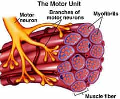

< < < Back
How To Do A One-Handed Pushup – Return Of Kings
The one handed pushup is an exercise that many are familiar with, but only within the confines of television and movies. Whether it be Bruce Lee or Rocky Balboa, millions of boys and young men have seen this nigh-superhuman feat and sought to perform it…only for their efforts to result in sore shoulders, popping elbows, and other maladies (one result they will certainly not achieve is the successful completion of a one-armed pushup).
Simply put, I doubt there is any person in the world who can do a one-handed pushup on their first try, for the simple fact that almost nobody is taught how. This article will start you upon the admittedly difficult road to this seemingly impossible feat.
Bruce Lee doing a one handed, two finger pushup.
Some Biological Background
Resistance training should, ideally, train more than just the muscles—it should also strengthen the connective tissue of tendons and ligaments, and train the nervous system to work in conjunction with the skeletal muscles as the proverbial “well-oiled machine.” Muscle fibers connected to neurons from the nervous system are a “motor unit,” and to exercise is to train both the muscles to contract, and the nervous system to fire more powerful electrical impulses to the synapses, which in turn forces the muscles to contract more powerfully, etc.
When you do a particular exercise more frequently, you train the motor units that do that exercise to work more efficiently, which leads to you become stronger.
Why This Is Relevant

While most of us are well familiar with the standard two-handed pushup, this exercise alone cannot train the body to hold its weight on one arm. To do a one-handed pushup, you have to train your body (the muscles, the joints, and the nervous system) to become used to bearing the weight on one arm. Realistically, why would you expect to be able to do it immediately after training with two arms? Instead, you should take steps to gradually force the solitary arm to bear more and more weight, until the true one-handed pushup is done. But chances are, you don’t know the steps.
Once again, the public school system fails us all—rather than providing worthwhile coaching in any sort of athletics, gym class has us play stupid games involving paddles and furniture dollies. Or maybe it was just my school that played “pickleball,” I don’t know.

It wasn’t until college that I was fortunate enough to have instruction in proper calisthenics. Gradually I learned the progressive steps to increasingly more difficult push-ups, and after roughly a year of effort, I was capable of doing true one-handed pushups.
Why Calisthenics?
A question I get a lot is why bother doing calisthenics? Why not stick to weights? Certainly, I’m not anti-weight. I do extensive weight training as well, and I will eventually write instructional articles on various lifts. However, I feel that calisthenics are beneficial to all strength-training athletes, whether they are a total beginner or a veteran of the weight room.
High level calisthenics (one arm pushups, one leg squats, etc.) train the motor units to maximally exert themselves in an orientation totally alien to weight training. This can only make you stronger generally. In addition, they have almost no risk of injury compared to weights. They are in some ways more practical for daily life, and for the beginner, they provide a solid base of strength for future weightlifting.
It is my opinion that if you cannot manipulate your own body to a reasonable level, you have no business lifting weights—thus I always instruct people to start with calisthenics before starting with weights. Take my advice to whatever extent you want to, but my core thesis remains: you should incorporate calisthenics into your routine.
The Pushup Progression
Bear in mind that in all calisthenics you should do them relatively slowly and controlled, with proper form being upheld. And for pushups specifically, you lower yourself until your nose or chin (whichever you prefer) touches the ground.
The first pushup, which most of you will likely not need to do but I include for the sake of completion, is the knee pushup. Get on your hands and knees and slide your legs back until you feet and shins are off the ground, and you are only resting on your knees. Using the knees as a pivot, do a pushup. Once you can 10 of these, move on to the next step.

The second pushup is the standard you remember from gym class. Keeping the back straight and the hips and buttocks down, bend at the arms and lower your nose to the ground, then push up. Do that 10 times, and move on.

The third pushup is the diamond pushup: The hands are brought next to each other forming a diamond shape, and then the pushup is done as usual. If you find these difficult, you can gradually bring your hands closer together. In other words, from the standard pushup, move your hands a couple of inches closer, and then next time another couple of inches closer, etc. until you get to the true diamond form. Once you feel enough of the Illuminati power to complete 10 of these, move on.
Jay Z’s pushup form or a call to Satan?
Following that, we have “one and a half” hand pushups. Put your hand on a basketball, or something the same size as a basketball (I stacked three books in the picture), and do a pushup. This handicaps the hand that is resting on the object, forcing the other hand to work harder. Do this for both hands. Once you can do 10 with each hand, move on.

In contrast to one and a half hand pushups, we now have half one-handed pushups. This is, as the name implies, doing a one-handed pushup, but only going halfway down. Get in a one-handed push-up stance: spread the legs to shoulder width, put the resting hand behind the back, and balance on the other hand (keep the hips down of course). Then bend at the elbow, go as low as you can go, then push up.
This exercise is where the talk of the nervous system above comes into play—your body is simply not used to moving in this way, and you will almost certainly not be able to bend all the way down. Do this exercise with both hands until you can bend down all the way. You don’t need to push up, just bend down all the way with the one arm. Realize that your torso will not touch the floor as in the standard pushup, and your hips may “worm” up a little bit. Try to keep the latter to a minimum.

Supported one-handed pushups are a bit unusual, so unusual I don’t have a picture (thanks to Paul Wade’s Convict Conditioning for this one). It’s similar to the one and a half hand pushup, but with the supported arm being fully extended—put the supported hand on the basketball (it has to be a ball this time), and roll it out so the arm is extended. Then do a pushup, rolling the ball to your wrist and forearm. The key is not to bend the supported arm. When you can do this 10 times with both arms, you are ready to try the one-handed pushup.
The one handed pushup is, as one might assume, identical to the half one handed pushup: you just bend all the way down, touch your chin or nose to the ground, and bend all the way up. You want to avoid contorting your back or hips (pain will tell you when you’re doing this).

Once you can do the one-armed pushup, you can begin training repetitions for endurance.
This exact pattern of progressions also works with fingertip pushups, which I have trained to a one handed variation:

And the same general idea of gradually increasing to progressively harder variations a little bit at a time applies to all calisthenics in general—in effect, it is the bodyweight equivalent of adding weight to the bar. Good luck with your training, and see you next week.
Read More: The #1 Reason You’re Struggling To Gain Muscle